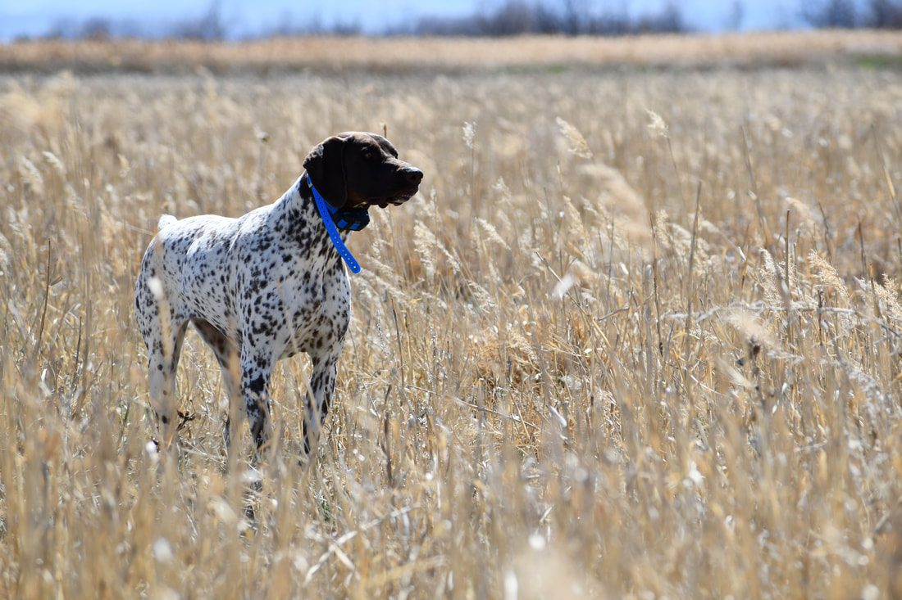
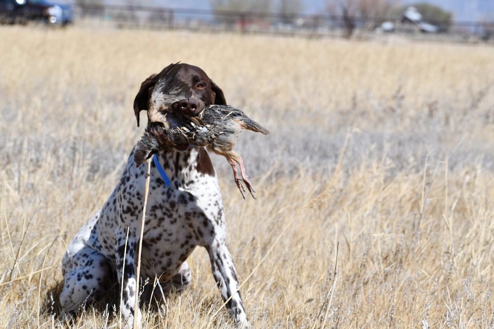
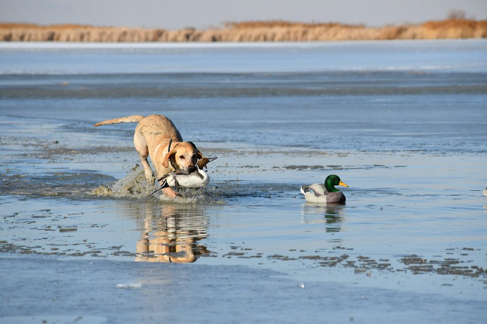
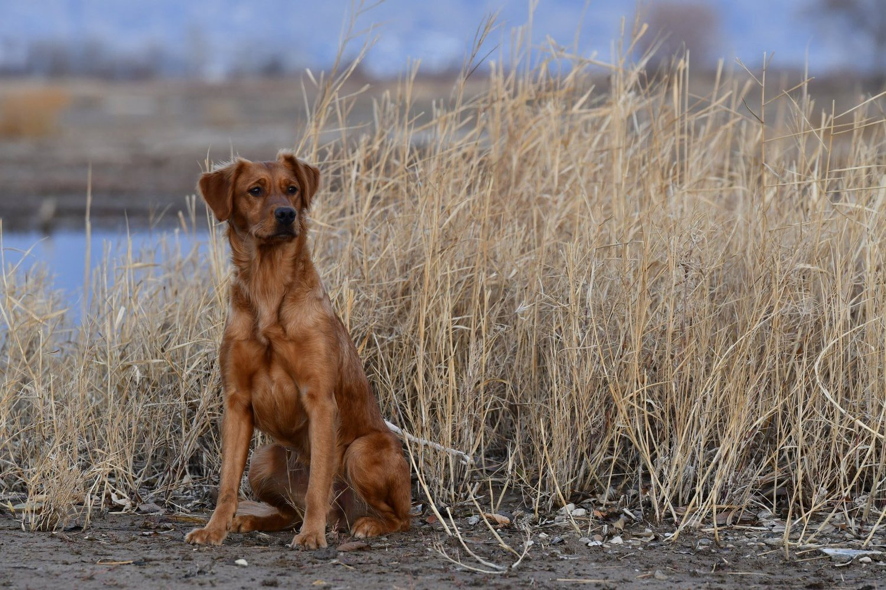

A gun-shy dog does not always run away.
That is one of the biggest things I want owners to understand.
Sometimes the signs are obvious.
A dog may bolt, head back to the truck, refuse to hunt, or try to avoid the person carrying the gun.
But many dogs show much more subtle changes.
The most important thing I watch is this:
Does the dog’s normal demeanor change when gunfire happens?
If the answer is yes, there may be a gun issue developing.
Running away is an obvious sign
Some dogs make it very clear that they are uncomfortable.
They may:
- Run away after a shot.
- Head back toward the truck.
- Try to leave the field.
- Avoid the handler.
- Refuse to continue hunting.
Those are obvious signs that the dog is not comfortable with gunfire.
But they are not the only signs.
Staying beside you does not mean the dog is fine
This is where a lot of owners get confused.
A dog may hear a shot and stay right next to the owner.
The owner thinks:
“He didn’t run away, so he’s fine.”
But the dog may actually be shutting down.
A dog that normally ranges out and searches the field may suddenly start walking beside you.
A dog that normally hunts independently may stay close.
A retriever may stop retrieving.
A pointing dog may stop working birds.
A dog may become quiet, slower, or less animated.
That dog may still have a gun issue even though it never physically leaves.

Watch for a change in hunting behavior
For hunting dogs, one of the biggest warning signs is a change in how the dog works after gunfire.
Before the shot, the dog may be:
- Ranging out.
- Searching for birds.
- Running with confidence.
- Retrieving enthusiastically.
- Working independently.
- Showing strong prey drive.
After the shot, the dog may:
- Stop ranging.
- Come back toward the handler.
- Walk behind or beside the owner.
- Stop searching.
- Lose interest in birds.
- Stop retrieving.
- Slow down.
That shift matters.
The dog is telling you the gunfire has become more important than the job it was doing.
A drop in energy can be a warning sign
Gun shyness is often a change in energy.
A dog may not panic.
It may simply become less happy.
You may notice:
- Less enthusiasm.
- Less movement.
- Less interest in play.
- Less interest in birds.
- A lower tail.
- A more cautious posture.
- Less willingness to leave your side.
Those changes may be easy to miss if you are only watching for extreme fear.
I am looking at the whole dog.
Is it still acting like itself?

Stopping a retrieve is a sign to pay attention
If a dog loves retrieving and suddenly stops after a shot, that is useful information.
The same is true if the retrieve becomes slower or hesitant.
A dog may start toward the bird or bumper and then stop.
It may return without completing the retrieve.
It may lose interest entirely.
That does not automatically mean the dog is permanently gun shy.
But it does mean the sound may have crossed the dog’s comfort threshold.
At that point, I would slow down.

Losing bird interest can be a major sign
With many hunting dogs, birds are extremely positive.
That is why we often use birds when introducing gunfire.
If a dog is very birdy and suddenly loses interest after gunfire, that tells me the gun has become too important in the dog’s mind.
The bird should still be the main focus.
If the gun overrides prey drive, we may be moving too fast.
Becoming clingy can be a gun-shy response
Some dogs respond to fear by trying to stay close to the owner.
They may:
- Follow directly behind you.
- Walk against your leg.
- Refuse to range out.
- Keep checking back.
- Stay close after a shot.
Owners sometimes interpret this as obedience or loyalty.
But if the dog normally works independently and suddenly becomes clingy after gunfire, I would pay attention.
The context matters.
Freezing or becoming very still is another warning sign
A frightened dog does not always run.
Some dogs freeze.
They may become unusually still and stop participating in whatever they were doing.
This can happen around gunfire, fireworks, or other loud noises.
A dog that suddenly stops moving or engaging may be showing fear even if it stays physically close to you.
- 1Watch before the shot
- 2Watch after the shot
- 3Look for any change
- 4Slow down if the dog is not itself
Watch what happens before and after the shot
One of the easiest ways to judge the dog’s reaction is to compare behavior before and after gunfire.
Ask yourself:
Before the shot:
- Was the dog happy?
- Was it retrieving?
- Was it running?
- Was it hunting?
- Was it interested in birds?
- Was its tail and body language normal?
After the shot:
- Did anything change?
- Did energy drop?
- Did the dog stop working?
- Did it move closer to you?
- Did it start watching the shooter?
- Did it become tense?
If the answer is yes, slow down.
The gun should not become more important than the activity
When we introduce gunfire correctly, the dog should care more about the positive activity than the shot.
That might be:
- A bird.
- A retrieve.
- Food.
- Play.
- Hunting.
If the dog hears the shot and immediately goes back to what it was doing, that is usually a better sign.
If the dog stops the activity and focuses on the sound, the gunfire may be too intense.
A dog can be mildly concerned before it becomes severely gun shy
Gun issues can build over time.
A dog may start with a small change in behavior.
Then the owner continues shooting around the dog.
Eventually, the response becomes more severe.
That is why I do not like repeatedly “testing” dogs with gunfire.
If you see a negative change early, take it seriously.
It is much better to slow down before the dog develops a deeper fear.
What should you do if you notice these signs?
The first thing I would do is stop increasing the gunfire.
Do not fire another shot just to confirm the reaction.
Do not keep shooting to see whether the dog will get over it.
Instead:
- Back up.
- Increase the distance from live gunfire.
- Return to something positive.
- Rebuild confidence.
- Watch the dog’s demeanor.
- Progress only when the dog is comfortable again.
If the dog already has a strong negative reaction, you may need to back away from live gunfire completely for a period of time.
When recorded gunfire can help
For dogs that already show concern around live gunfire, a controlled sound progression can be useful.
That is one reason I created Gunshy Fix.
The program combines calming music with gradually introduced gunfire.
The dog can work through each lesson at home while eating, playing, retrieving, relaxing, or doing another positive activity.
The goal is the same:
The dog’s demeanor should stay normal.
If the dog’s behavior changes, go back to the previous lesson.
Do not use volume to test the dog
Recorded gunfire should not be used as another way to see how much the dog can tolerate.
Start at a comfortable level.
Do not turn the volume up quickly.
Do not jump to a louder lesson because the dog looked okay once.
Progress gradually.
If the dog starts showing concern, lower the intensity.
Puppies can show the same early signs
A puppy may not immediately run away from gunfire.
It may simply:
- Stop playing.
- Stop eating.
- Stop retrieving.
- Move closer to you.
- Become still.
- Lose enthusiasm.
Those are the same kinds of demeanor changes I watch in older dogs.
If a puppy reacts that way, I would not keep increasing the sound.
Back up and make the next experience easier.
Fireworks and other loud noises can reveal similar behavior
Some owners first notice the issue around fireworks.
The dog may sit beside them and not move.
They may assume the dog is fine because it is not hiding.
But if the dog’s normal personality disappears, that can still be a fear response.
The same principle applies.
Watch the dog’s normal demeanor, not just whether it runs.
When should you consider professional help?
Professional help may make sense if:
- The dog repeatedly shuts down around gunfire.
- The dog has stopped hunting.
- The dog will not retrieve when shots happen.
- The dog keeps hitting the same threshold.
- You do not have access to birds.
- You do not have safe property for live gunfire.
- You do not have another person to help with controlled distance.
- You are unsure how to read the dog’s body language.
Some dogs can begin the process at home.
Others need field work with birds and live gunfire to finish the process.
The main sign to remember
If you remember one thing, remember this:
Gun shyness is often a change in normal behavior.
A dog does not have to run away.
If the dog stops hunting, stops retrieving, stays glued to your side, loses bird interest, becomes unusually quiet, or simply stops acting like itself around gunfire, take that seriously.
Slow down before the problem gets worse.
Start with a controlled approach
If your dog is already showing signs of concern around gunfire, Gunshy Fix gives you a way to begin working with the sound at home before returning to live field training.
The lessons gradually introduce gunfire alongside calming music so you can progress based on the dog’s comfort level.